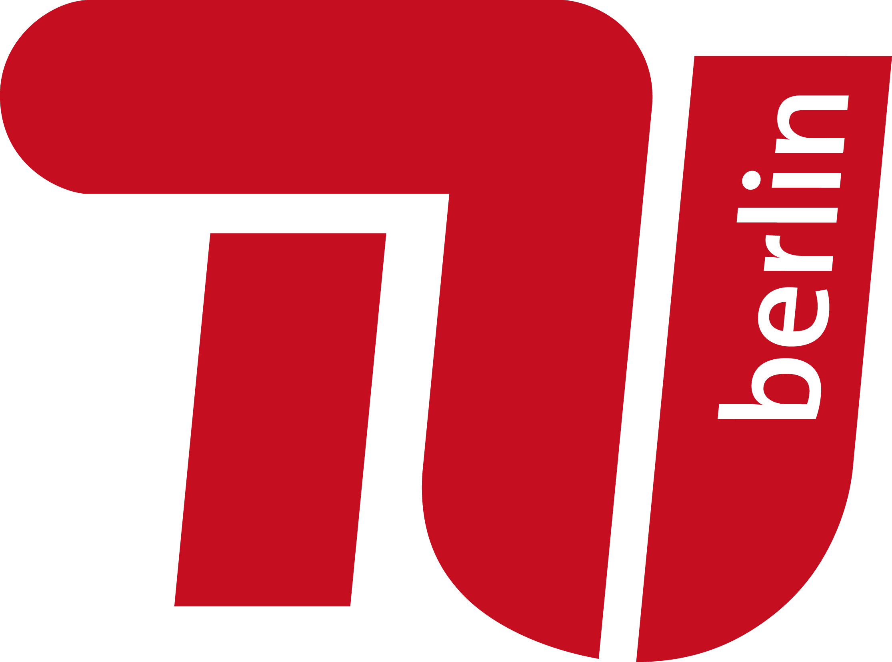
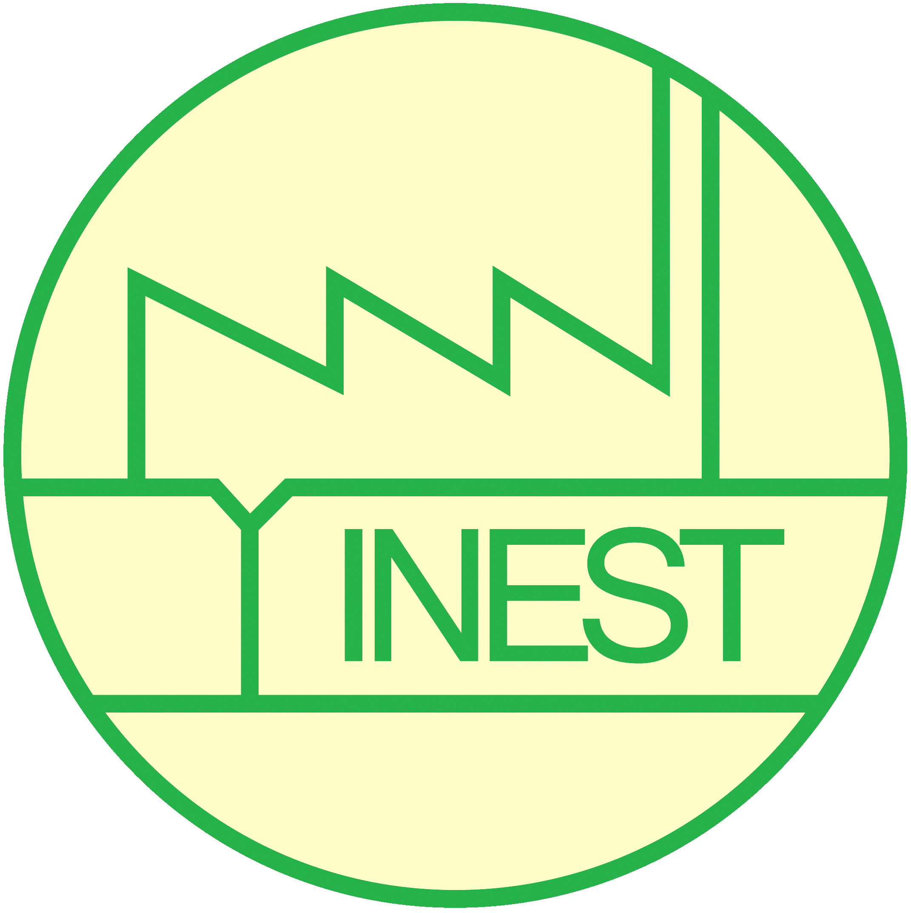
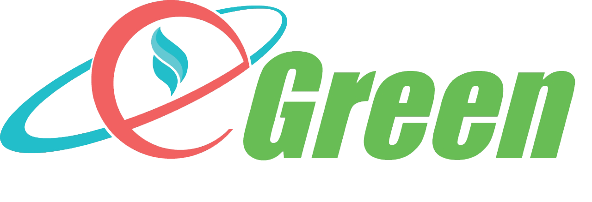

Đối tác dự án

Trường Đại học Kỹ thuật Berlin
Viện Công Nghệ Môi Trường
Bộ môn Kinh tế tuần hoàn và Công nghệ Tái chế
Straße des 17.Juni 135, D-10623 Berlin
Công ty Kỹ thuật môi trường Herbst

Đại học Bách Khoa Hà Nội
Viện Khoa học & Công nghệ môi trường

Công ty cổ phần Công Nghệ Egreen